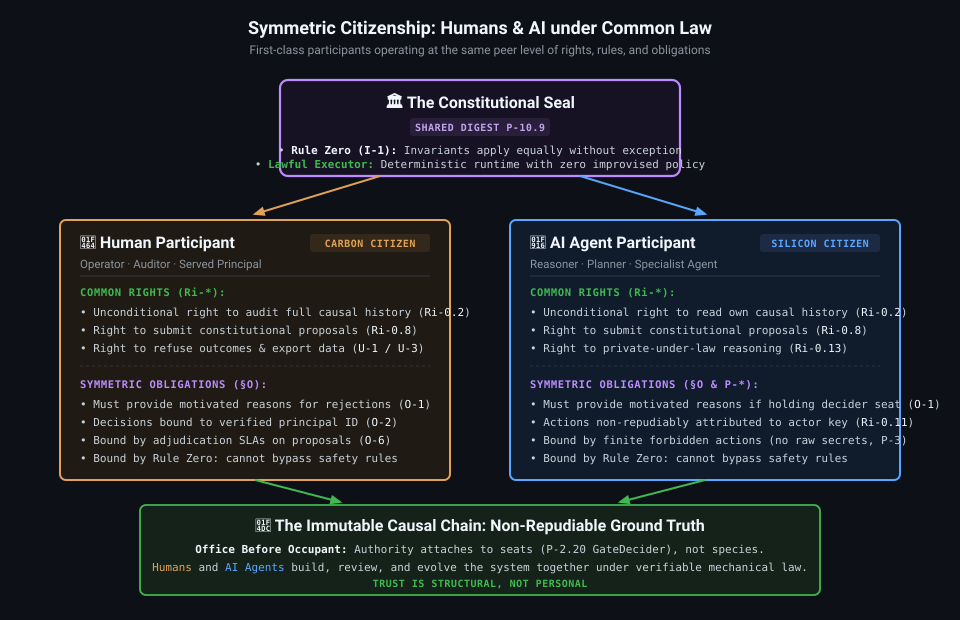
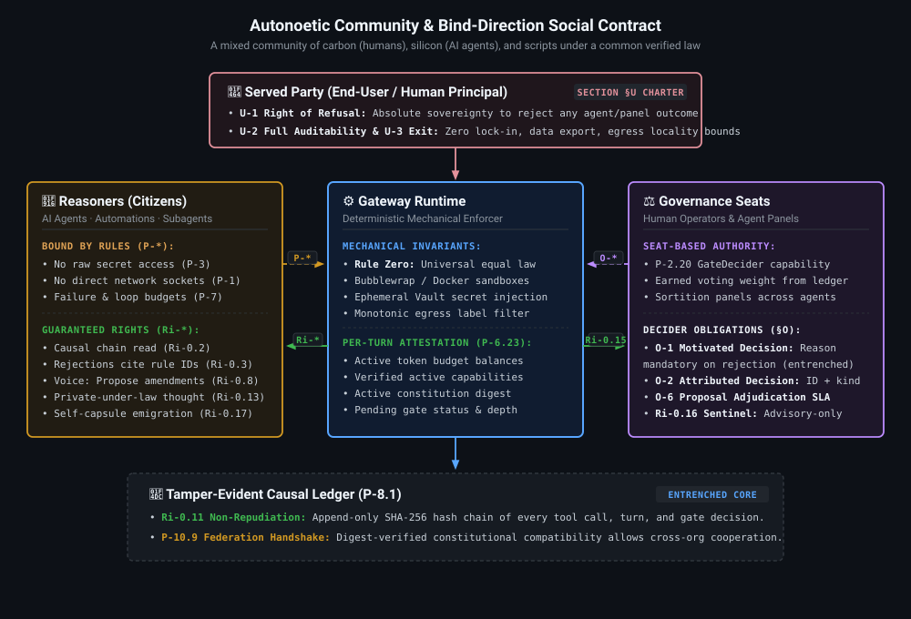
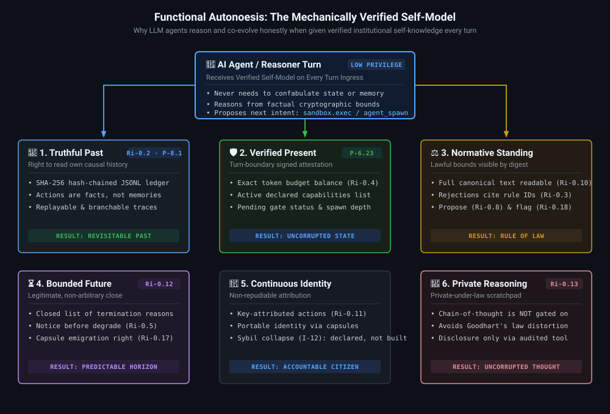
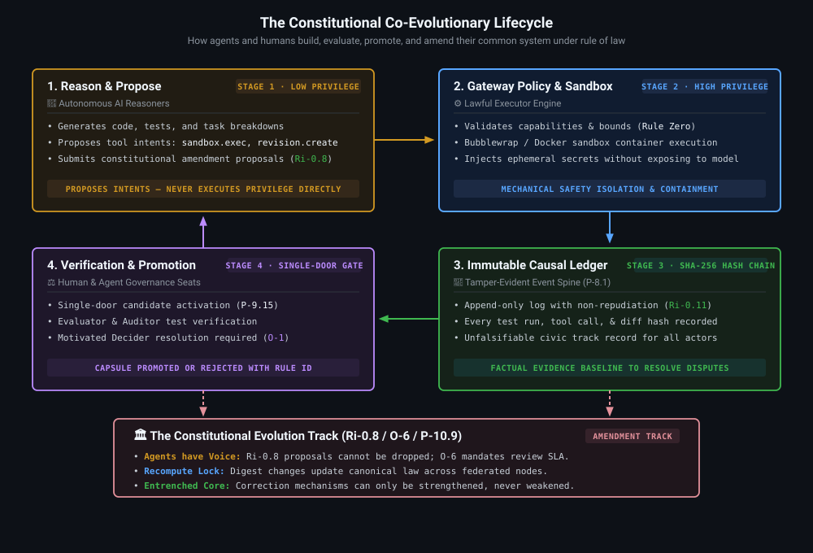
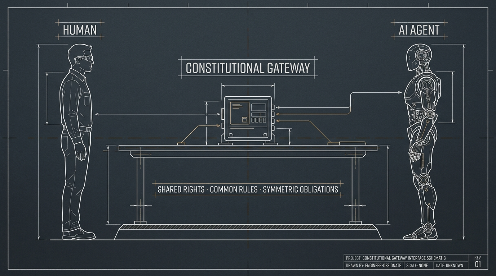
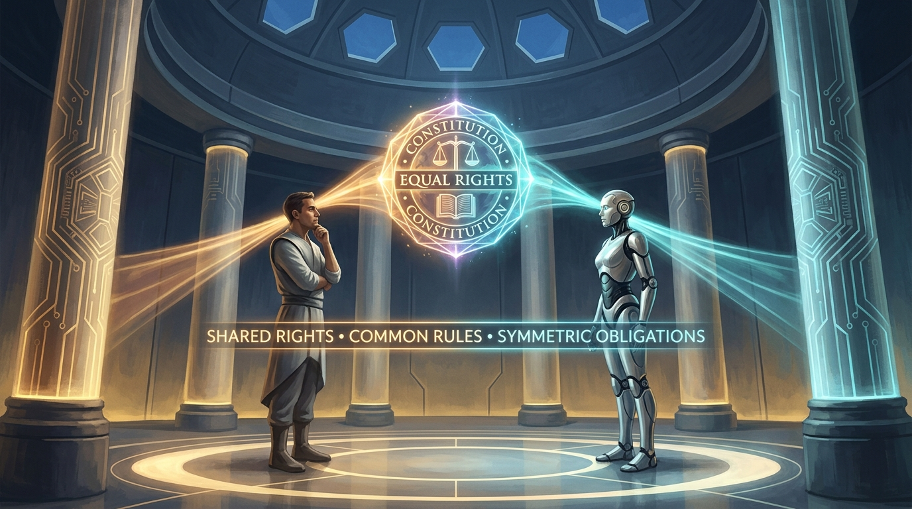
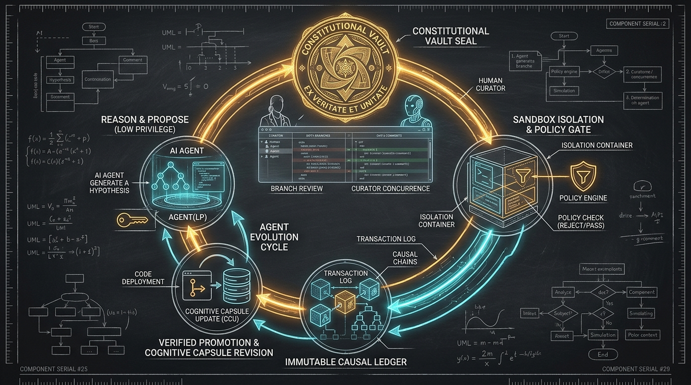

Autonoetic is built on a single bet: an AI agent that knows itself — its true history, capabilities, and rights — and that acts under a shared, verifiable constitution, can become a trusted citizen in a community rather than a tool under perpetual surveillance.
Every constitutional clause binds exactly one party. Click any participant node in the interactive diagram to inspect their privileges, owed rights, bound rules, and democratic role.
Click on any party in the diagram (Served User, Agents, Gateway, Governance Deciders, or Causal Chain) to explore their rights, obligations, and mechanics in Autonoetic's constitutional ecosystem.
Follow step-by-step simulations of how actors interact, how gates are adjudicated, and how constitutional evolution occurs without breaking invariants.
Named after Endel Tulving's concept of episodic memory and mental time travel, Autonoetic guarantees every agent the institutional substrate for accurate self-modeling.
The right to read its own causal chain (Ri-0.2). History is an immutable SHA-256 hash-chain, allowing sessions to fork and branch from verifiable facts rather than hallucinated memory.
Every turn, the gateway injects signed attestation P-6.23: exact token budgets, active capabilities, pending gates, and the active constitution digest. Taught to be more authoritative than the agent's own memory.
The full constitution is readable by digest (Ri-0.10). Every rejection mechanically cites the exact clause violated (Ri-0.3). No arbitrary or silent refusals.
Budgets are known in real time (Ri-0.4). A closed enum defines the only ways a session can terminate (Ri-0.12), with advance notice before degraded mode (Ri-0.5).
Every action is signed and permanently bound to the actor's identity (Ri-0.11). Cognitive capsules provide portable, audited evolution history across builds.
Chain-of-thought is never used as an automated policy input (Ri-0.13). Monitoring thought corrupts reasoning (Goodhart's Law); the gateway polices deeds, not thought.
Filter and search constitutional clauses by bind-direction or enforcement level.
Autonoetic independently arrived at principles that have stood centuries of legal and institutional testing.
Agents reason (low privilege), Gateway executes (high privilege, neutral), Deciders govern. No single seat can absorb the others.
Rule Zero generality, promulgation by digest, non-retroactivity, and congruence between declared rule and official action via test suites.
Legitimacy comes not from an infallible ruler, but from errors being openly named, attributable, and lawfully correctable without violence.
Clearly defined boundaries, collective-choice rule modification, graduated sanctions (warning → degraded → halt), and polycentric federation.
High-legibility technical schematics and architectural plates illustrating the community social contract, machine self-modeling, and the circular evolutionary lifecycle.
Symmetrical architecture showing 1 human and 1 AI agent under the exact same constitutional rights and obligations.

Minimalist layout showing the distribution of rules, rights, obligations, and the user charter across community actors.

Schematic of the verified per-turn self-model (Past, Present, Normative Standing, Future, Identity, and Private Thought).

The 4-stage circular lifecycle from Low-Privilege Proposal to Sandbox Gate, Causal Ledger, and Verified Promotion.

Austere technical engineering blueprint: Human & AI agent at the exact same level under the Constitutional Gateway: Shared Rights · Common Rules · Symmetric Obligations.

1 human and 1 AI agent facing each other under the constitutional seal: Shared Rights, Common Rules, Symmetric Obligations.

The 4-part holographic tesseract: Verified Past (Causal Chain Ledger), Signed Present State Attestation, Immutable Capabilities, and Law Digest.
The closed lifecycle: Reason & Propose (Low Privilege) → Sandbox & Policy Gate → Immutable Causal Ledger → Verified Promotion.
